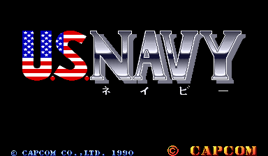
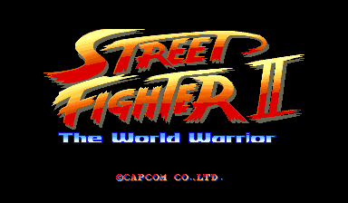
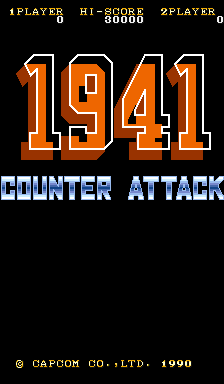
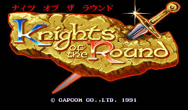
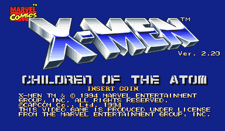
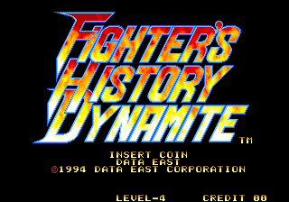
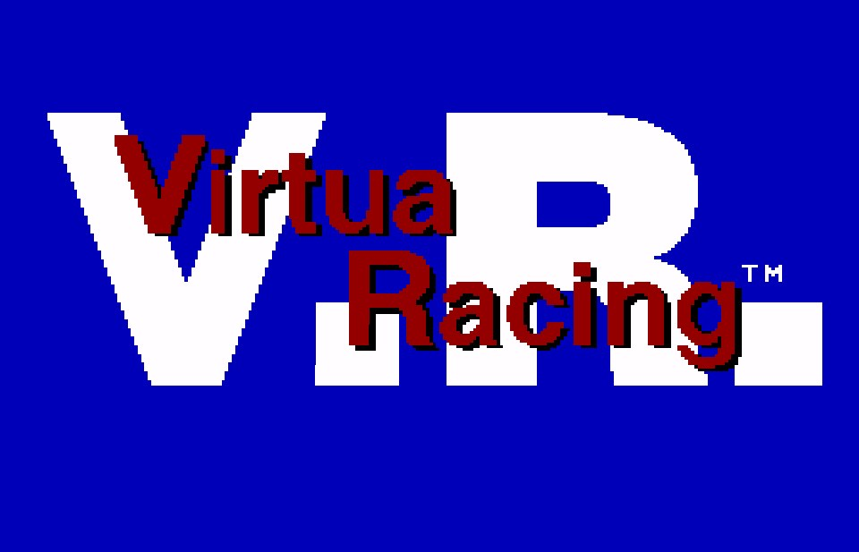

Hi! Welcome to my website! This page will let you see any changes when I upload some new music for you to enjoy! Also, visit my "About" page for more detailed information about this website. And, you can go to my "Links" page to hear my music in my other accounts on popular music streaming sites to gain more attention. Anyways, enjoy what I have to offer here! |
|
|
|  | Original Composition - Atmosphere (Mission 11)
[U.S. NAVY] Finished on: 11/4/2024 |
.vgm file |
My original composition using the exact instruments used in the Capcom Power System arcade game U.S. NAVY. I made this as if there were an eleventh mission in the game where it would take on the edge of Earth's atmosphere where the final boss would be later fought on outer space of some sort. |
|  | Original Composition - Bonus Stage (Mokujin)
[STREET FIGHTER II: THE WORLD WARRIOR] Finished on: 11/4/2024 |
.vgm file |
The fourth version of my original Street Fighter II bonus stage music composition, in the style of the game's original Capcom Power System version. |
000.png) |
Original Composition - Bonus Stage (Mokujin)
[STREET FIGHTER II: THE WORLD WARRIOR] Finished on: 11/3/2024 |
.mp3 file |
The third version of my original Street Fighter II bonus stage music composition, in Super Famicom-style. |
_000.bmp) |
Original Composition - Bonus Stage (Mokujin)
[STREET FIGHTER II' PLUS: CHAMPION EDITION] Finished on: 11/3/2024 |
.vgm file |
The second version of my original Street Fighter II bonus stage music composition, in the style of the Mega Drive prototype version's final build. |
_000.bmp) |
Original Composition - Bonus Stage (Mokujin)
[STREET FIGHTER II': TURBO (PROTOTYPE)] Finished on: 11/2/2024 |
.vgm file |
My original composition using the exact instruments from the Mega Drive prototype version of STREET FIGHTER II. I made this as if there were a bonus stage where you would fight wooden men taking place in China, so I gave this composition a Chinese-ish theme to it. |
_000.bmp) |
SFC Cover - Scene 3: Pond Finished on: 10/9/2024 |
.mp3 file |
My Super Famicom cover of the third level background music from the Mega Drive game モンスターハンター妖子: 第7の警鐘. Originally by: Keiichi Yamamoto |
|  | Original Composition - Bonus Stage [1941: COUNTER
ATTACK] Finished on: 9/28/2024 |
.vgm file |
My original composition using the exact
instruments used in the original arcade version of the game 1941: COUNTER ATTACK. |
 (v1_000.bmp) |
Original Composition - Secret Boss Battle
[Granada] Finished on: 9/27/2024 |
.vgm file |
My original composition using the exact instruments used in the Mega Drive version of the game Granada. As I finished this composition, I just thought of this more suiting with a hidden path to a sub-boss fight or something. |
|  | CAPCOM QSound Cover - Stage 4
(Knight Festival) Finished on: 9/12/2024 |
.mp3 file |
My CAPCOM QSound Cover of the fourth stage theme from the CPS version of the game Knights Of The Round. Originally by: Isao Abe |
 |
Original Composition - Outerrace [SONIC & SEGA
ALL-STARS RACING] Finished on: 9/8/2024 |
.mp3 file |
My original composition using the exact instruments used in the Nintendo DS version of the game SONIC & SEGA ALL-STARS RACING. I actually composed this on the software OpenMPT because I was testing out and organising the samples used in the NDS game and I was using the software first anyway. I didn't compose this on Furnace Tracker because at this time that software didn't support VGM exportation for the Mitsumi MM3205B (the audio chip used in the Nintendo DS). |
_000.bmp) |
Original Composition - Industrial Cake Factory
[美少女戦士セーラームーン] Finished on: 7/4/2024 |
.vgm file |
My original composition using the exact instruments used in the Mega Drive game 美少女戦士セーラームーン. I made this as of remembering if the beginning melody that I made in this track was probably in one of the soundtracks from the game, and when I listened to the whole soundtrack from the game again, there actually was a melody of that in one of the soundtracks, and it was the second part of the cave stage theme from the game. So I made this by starting on the melody that I actually did remember while not knowing it was on the game. |
_000.bmp) |
Competition Menu (Alternate Version) Updated on: 5/16/2024 |
.vgm file |
My original composition using the exact instruments used in the competition menu screen music from SONIC THE HEDGEHOG 3. |
_000.bmp) |
Mystic Cave Zone (2-Player)
(Alternate Version) Updated on: 8/5/2024 |
.vgm file |
My original composition using the exact instruments used in the 2-player version of the Mystic Cave Zone theme from SONIC THE HEDGEHOG 2. |
|  | YM2151+OKI MSM6295 (CPS) Cover - Samurai Shrine
(Silver Samurai stage) Updated on: 8/5/2024 |
.vgm file |
My Capcom Power System (YM2151+OKI MSM6295) styled cover of Silver Samurai's background stage theme from X-MEN: CHILDREN OF THE ATOM. Originally by: Hideki Okugawa |
|  | YM2151+OKI MSM6295 (CPS) Cover - Samchay theme
Finished on: 12/30/2023 |
.vgm file |
My Capcom Power System (YM2151+OKI MSM6295) styled cover of Samchay's background stage theme from FIGHTER'S HISTORY DYNAMITE. Originally by: Mihoko Ando, Shoko Sagai |
_000.bmp) |
CAPCOM QSound Cover - Blue Lake Woods Finished on: 12/17/2023 |
.mp3 file |
My CAPCOM QSound styled cover of the entire first level from CHAMELEON KID. Originally by: Mark Miller |
| |
Original Composition - Frontier Isle [SONIC THE
HEDGEHOG 3] Updated on: 8/1/2024 |
.vgm file |
My original composition using the exact instruments used in SONIC THE HEDGEHOG 3. I made this as an idea if there were a sixth competition zone from the game and imagined if it took place in a clean and lively-looking beach on an island of some sort. |
|  | SFC Cover - Replay Updated on: 6/4/2024 |
.mp3 file |
My Super Famicom styled cover of the Replay theme from the Mega Drive version of Virtua Racing. Originally by: Takenobu Mitsuyoshi |
_000.bmp) |
Sandopolis Zone (Act 1) Alternate Version
Finished on: 8/15/2023 |
.vgm file |
My original composition using the exact instruments used in the first act of the Sandopolis Zone theme from SONIC & KNUCKLES. |
 |
Rusty Ruin Zone (Act 1) Alternate Version
Finished on: 5/20/2023 |
.vgm file |
My original composition using the exact instruments used in the first act of the Rusty Ruin Zone theme from the Mega Drive version of SONIC 3D BLAST. |
| |
Marble Garden Zone (Act 2) Alternate Version
Updated on: 6/4/2024 |
.vgm file |
My original composition using the exact instruments used in the second act of the Marble Garden Zone theme from SONIC THE HEDGEHOG 3. |
| |
Marble Garden Zone (Act 1) Alternate Version
Finished on: 6/30/2022 |
.vgm file |
My original composition using the exact instruments used in the first act of the Marble Garden Zone theme from SONIC THE HEDGEHOG 3. |